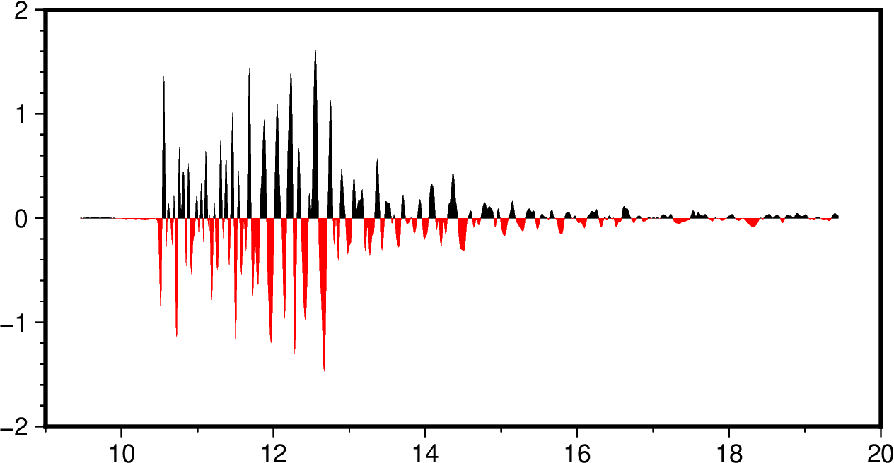
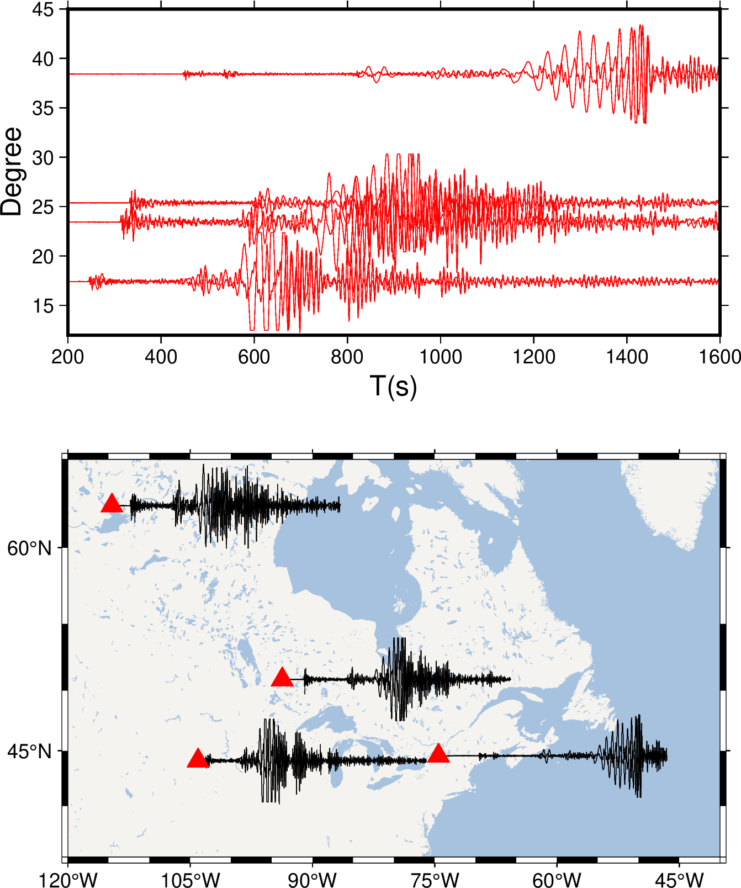

sac
- 官方文档:
- 简介:
绘制 SAC 格式的地震波形数据
sac 模块可以读取SAC文件并绘制波形数据。
备注
sac 模块修改自原 pssac 与 pssac2，其功能类似，但语法不同。
sac 模块实现波形绘制的步骤是：
读入 SAC 文件列表
根据
-T选项确定参考时间根据
-C选项和参考时间读入指定的波形数据段根据
-F选项对数据进行预处理根据
-M选项确定Y方向的缩放因子并对波形振幅进行缩放根据
-Q决定是否交换X和Y根据
-E以及其他信息确定波形在地图上的位置根据
-W选项绘制波形根据
-G选项为波形涂色
语法
gmt sac
[ saclist|SACfiles ]
-Jparameters
-Rregion
[ -B[p|s]parameters ]
[ -C[t0/t1] ]
[ -Ddx[/dy] ]
[ -Ea|b|k|d|n[n]|u[n] ]
[ -F[i][q][r] ]
[ -G[p|n][+gfill][+zzero][+tt0/t1] ]
[ -Msize[u][/alpha] ]
[ -Q ]
[ -S[i]scale[unit] ]
[ -T[+tn][+rreduce_vel][+sshift] ]
[ -U[stamp] ]
[ -V[level] ]
[ -Wpen ]
[ -X[a|c|f|r][xshift] ]
[ -Y[a|c|f|r][yshift] ]
[ -hheaders ]
[ -pflags ]
[ -ttransp ]
[ --PAR=value ]
输入数据
- SACfiles
要绘制在图上的一系列SAC文件名，目前仅支持等间隔SAC数据
- saclist
SAC 文件列表，每行包含一个SAC文件名及其对应的控制参数。
文件格式为:
filename [X Y [pen]]
filename 是要绘制的SAC文件名
X 和 Y 控制SAC波形的第一个数据点在地图上的位置。若省略 X 和 Y ，则使用其默认值，否则此处指定的 X 和 Y 将具有最高优先级
对于线性投影而言，X 默认是SAC文件的开始时间。使用
-T选项会 调整 X 的默认值，Y 值则由 -E 选项控制；对于地理投影而言，X 和 Y 默认是台站的经度和纬度。
pen 控制当前SAC波形的线条属性
必须选项
- -J
- -Jprojection
设置地图投影方式。 (参数详细介绍)
- -R
- -Rxmin/xmax/ymin/ymax[+r][+uunit]
指定数据范围。 (参数详细介绍)
可选选项
- -B
- -Bparameters
设置底图边框和轴属性。 (参数详细介绍)
- -C
- -C[t0/t1]
只读取并绘制时间窗 t0 到 t1 范围内的波形。
t0 和 t1 均是相对于参考时间的秒数，参考时间由
-T选项决定。 若未使用-T选项，则使用SAC头段中的参考时间（kzdate和kztime）。
- -D
- -Ddx[/dy]
使得波形偏离指定位置 dx/dy。若未指定 dy 则默认与 dx 相同。
- -E
- -Ea|b|k|d|n[n]|u[n]
选择剖面类型（即Y轴类型）
a 方位角剖面
b 反方位角剖面
k 震中距剖面（单位 km）
d 震中距剖面（单位 degree）
n 波形编号剖面，第一个波形的编号为 n [n 默认值为0]
u 用户自定义剖面，SAC波形的Y位置由SAC头段变量 usern 决定 [默认使用 user0]
- -F
- -F[i][q][r]
绘图之前的数据预处理
i 积分
q 平方
r 去均值
i|q|r 可以重复多次，比如 -Frii 会将加速度转化为位移。 i|q|r 出现的顺序决定了数据预处理的流程。
- -G
- -G[p|n][+gfill][+zzero][+tt0/t1]
为波形的正/负部分涂色。
- -M
- -Msize[u][/alpha]
控制Y方向的缩放。不使用的话，Y方向即为振幅
size[u] 将所有波形在地图上的高度缩放到 size[u]， 其中 u 可以取 i|c|p ，默认单位由 PROJ_LENGTH_UNIT 控制。
size/alpha
若 alpha 小于0，则所有波形使用相同的比例因子。比例因子由第一个 波形决定，第一个波形将被缩放到 size[u]
若 alpha 等于0，则将所有波形乘以 size ，此时不允许有单位
若 alpha 大于0，则将所有波形乘以 size*r^alpha，其中 r 是以 km 为单位的距离
- -Q
- -Q
垂直绘制波形，即Y轴是时间，X轴是振幅
- -S
- -S[i]scale[unit]
指定时间比例尺。
对于地理投影而言，即表示图上一个单位距离所代表的波形描述。 其中单位 unit 可以取 c|i|p。 若未指定 unit，则默认使用 PROJ_LENGTH_UNIT 所指定的单位。
在 scale 前加上 i 则时间比例尺的含义反过来，即 scale 表示 1秒长度的波形在图上的实际长度。
- -T
- -T[+tn][+rreduce_vel][+sshift]
指定参考时间及偏移量
+ttmark 指定参考时间（即将所有波形沿着参考时间对齐），其中 tmark 可以取-5(b), -4(e), -3(o), -2(a), 0-9(t0-t9)
+rreduce_vel 设置reduce速度，单位 km/s
+sshift 将所有波形偏移 shift 秒
- -U
- -U[label][+c][+jjust][+odx/dy]
在图上绘制GMT时间戳logo。 (参数详细介绍)
- -V
- -V[level]
设置 verbose 等级 [w]。 (参数详细介绍)
- -W
- -Wpen
设置波形的画笔属性
- -X
- -Y
-X[a|c|f|r][xshift[u]]
- -Y[a|c|f|r][yshift[u]]
移动绘图原点。 (参数详细介绍)
- -h
- -h[i|o][n][+c][+d][+msegheader][+rremark][+ttitle]
在读/写数据时跳过文件开头的若干个记录。 (参数详细介绍)
- -p
- -p[x|y|z]azim[/elev[/zlevel]][+wlon0/lat0[/z0]][+vx0/y0]
设置3D透视视角。 (参数详细介绍)
- -t
- -t[transp]
设置图层透明度（百分比）。取值范围为0（不透明）到100（全透明）。 (参数详细介绍)
- -^ 或 -
显示简短的帮助信息，包括模块简介和基本语法信息（Windows下只能使用 -）
- -+ 或 +
显示帮助信息，包括模块简介、基本语法以及模块特有选项的说明
- -? 或无参数
显示完整的帮助信息，包括模块简介、基本语法以及所有选项的说明
- --PAR=value
临时修改GMT参数的值，可重复多次使用。参数列表见 配置参数
示例
利用 SAC 的命令 funcgen seismogram 生成单个波形文件 seis.SAC 并绘制， 分别为正负部分涂色：
gmt begin single
gmt sac seis.SAC -JX10c/5c -R9/20/-2/2 -Baf -Fr -Gp+gblack -Gn+gred
gmt end show
{kind=link}

利用 SAC 命令 datagen sub teleseis *.z 生成多个波形，将其绘制在距离剖面和地图上：
gmt begin map
# 在网页服务器上存在路径查找问题，用户在本机运行时可以直接使用 gmt sac *.z 进行绘图
first_file=$(gmt which ntkl.z)
data_dir=$(dirname "$first_file")
SACfiles=$(echo "$data_dir"/*.z)
gmt coast -G244/243/239 -S167/194/223 -R-120/-40/35/65 -Baf -JM10c
gmt sac $SACfiles -M0.5i -S400c
# 以下坐标数据由 saclst stlo stla f *.z 生成
gmt plot -St0.4c -Gred -i1,2 <<- END
ntkl.z -114.592 62.4797
ntkm.z -114.592 62.4797
nykl.z -74.53 44.5483
nykm.z -74.53 44.5483
onkl.z -93.7022 50.8589
onkm.z -93.7022 50.8589
sdkl.z -104.036 44.1204
sdkm.z -104.036 44.1204
END
gmt sac $SACfiles -R200/1600/12/45 -JX10c/5c -Bx200+l"T(s)" -By5+lDegree -BWSen -Ed -M1.5c -W0.3p,red -Y8c
gmt end show
{kind=link}
